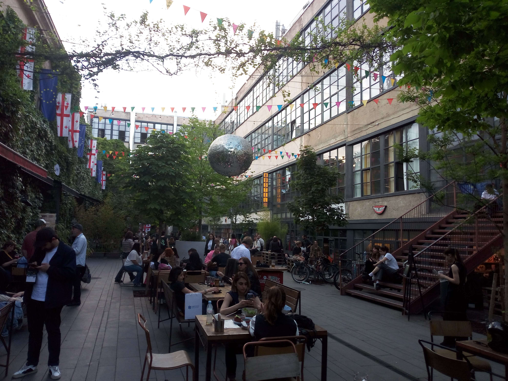

Fabrika Tbilisi
Fabrika is one of Tbilisi's most recognizable cultural and creative destinations, representing the city's contemporary artistic spirit and evolving urban identity. Housed in a former Soviet-era sewing factory, this industrial complex has been transformed into a vibrant meeting place where history and modern creativity come together. Its spacious courtyard, distinctive architecture, colorful murals, independent shops, cafés, bars, and creative studios give the place a character unlike anywhere else in the city. Fabrika is particularly interesting because it brings together people from different backgrounds, creating a lively environment where travellers, local residents, artists, and entrepreneurs naturally cross paths. The courtyard is often the heart of the experience, offering a relaxed setting to enjoy a coffee, meet friends, or simply observe the rhythm of the place. Every corner has something different to discover, from street art and unusual design details to small businesses and cultural activities. Rather than feeling like a conventional tourist attraction, Fabrika has the atmosphere of a neighborhood meeting point with its own personality. It also provides an interesting perspective on how an abandoned industrial building can be given a completely new role in the life of a city. My visit offered a chance to experience a different side of Tbilisi, one shaped by creativity, social interaction, and an alternative urban culture.
My Photo Gallery
Explore my personal photographs and travel memories from Fabrika Tbilisi.
View All Photos ↗